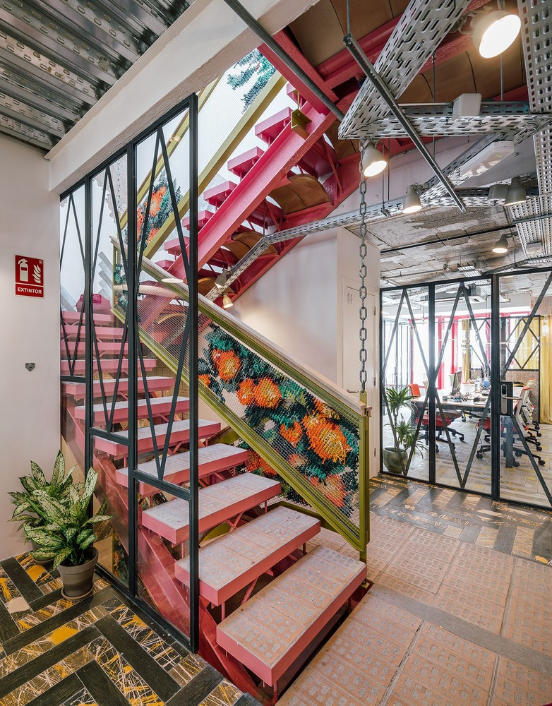
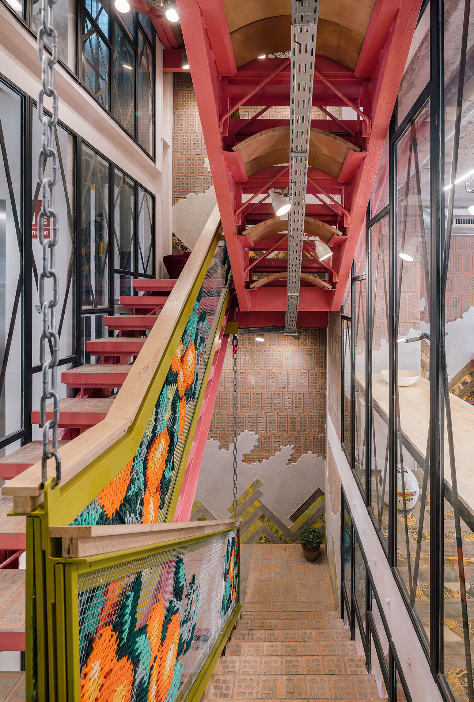
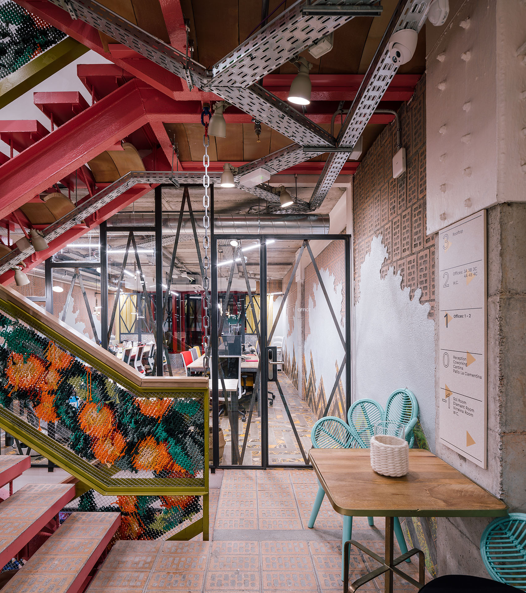
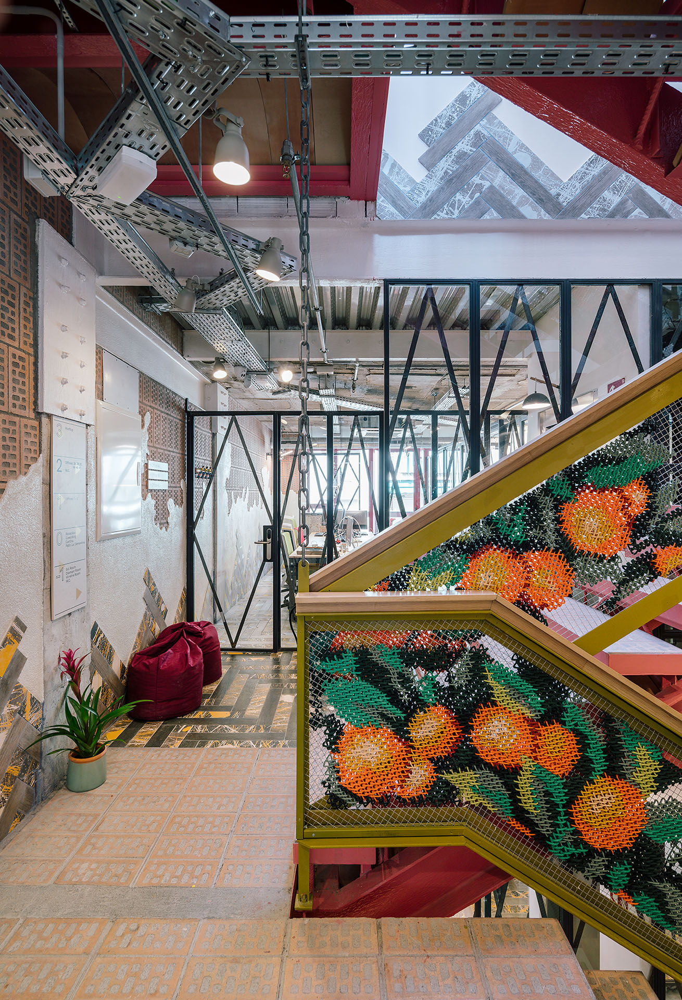
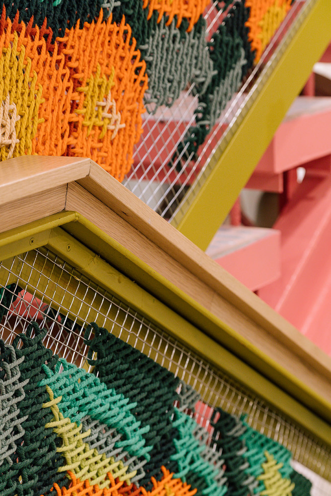
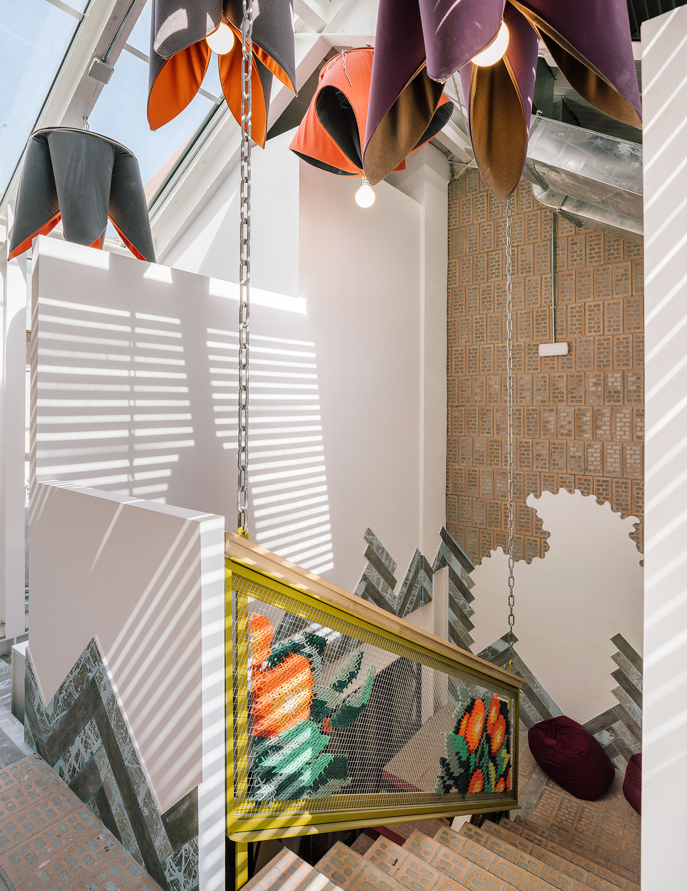
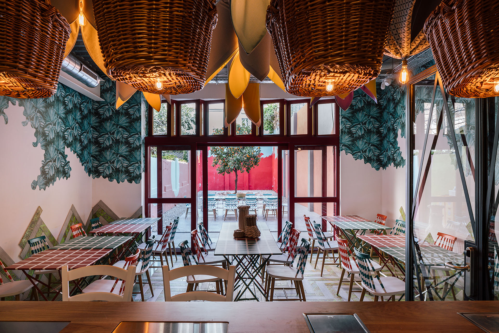

In 2018, architect Izaskun Chinchilla invited Arquicostura to collaborate with her design team on one of the most distinctive elements of UtopicUs Clementina — the railings of the building's central staircase.
Together we designed and embroidered every railing across all floors with clementines — in tribute to the tree that presides over the secret south-facing courtyard and gives the building its name. A gesture that connects the slow craft of embroidery with a space designed around nature, community and calm.
El edificio at Carrer Bretón de los Herreros 9 is deeply rooted in its surroundings: inspired by the rural heritage of Gràcia, the local Modernista tradition, and the nearby Casa Vicens by Antoni Gaudí — built just 150 metres away. Nature runs through every detail. And now, the railings.
UtopicUs Clementina is rooted in the history of Gràcia — a neighbourhood that was a rural village until 1897, when it was annexed to Barcelona. El edificio is inspired by its Modernista heritage and the nearby Casa Vicens by Antoni Gaudí, just 150 metres away. A space where working with passion requires moments of daily calm.
At the heart of the building, a south-facing secret courtyard is presided over by a clementine tree — the fruit that gives the space its name. Our embroidery carries that tree upward through every floor, stitch by stitch, so that the building's soul travels with you as you climb.





